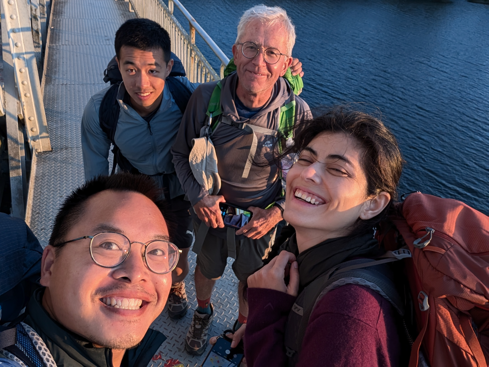
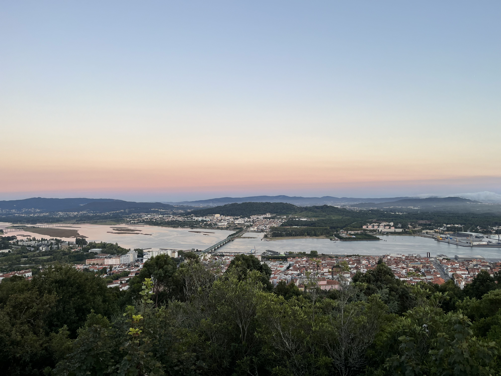
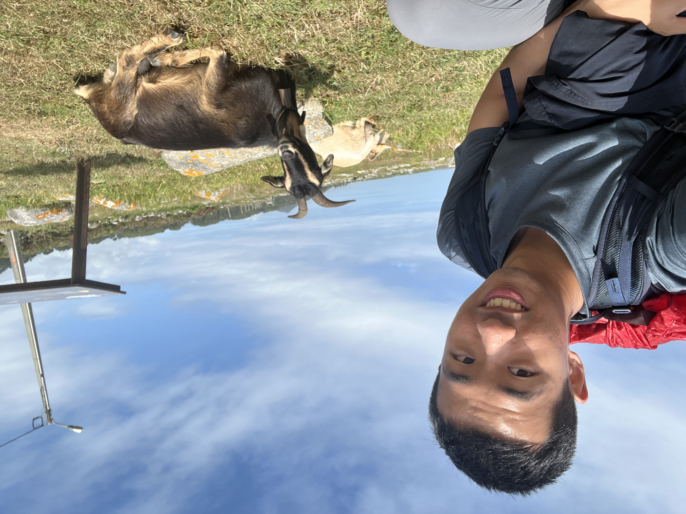
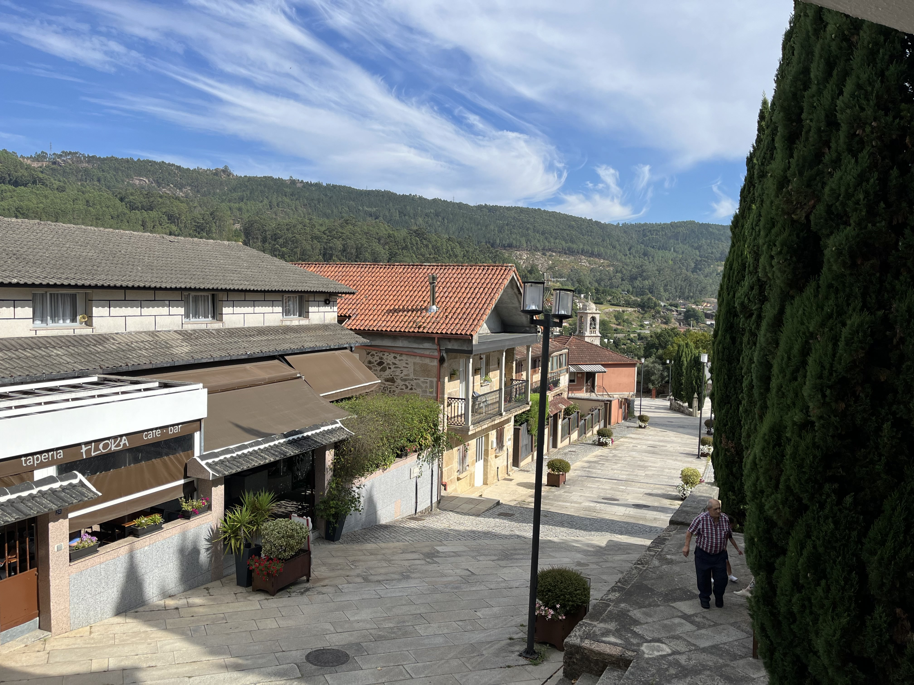

Two-and-a-half years ago, I introduced myself like this:
Hi! If you haven't figured it out yet, I'm Matthew. In a few weeks, I will be a student at the University of Waterloo, but for now, I'm a summer intern at BMO that watches Jeopardy in the evenings and Real Time with Bill Maher on Fridays. In my spare time, I'm coding, playing the piano, listening to history podcasts, following the stock market, and reading.
If you asked me for an introduction now, all I would do is swap out the company I’m working at and the shows I’m watching. That my introduction has not changed over the past 2.5 years does not mean I have changed equally little as a person. Rather, it is a result of following a static formula: name, occupation, interests, hobbies.
Why do we present ourselves like this? An obvious answer would be that it helps us find commonalities and conversation topics. However, I can think of one other reason why introductions revolve around name, occupation, interests, and hobbies: we show a different side of ourselves to different people. Meeting someone for the first time, I don’t know if I will be funny Matthew or nerdy Matthew or quiet Matthew to them. I can only start off by sharing the parts of myself that do not change. That cannot easily be hidden.
This raises the question though: are there any other aspects of ourselves that do not easily change and cannot easily be hidden, yet we omit from our introductions? I believe so.
This August, I spent 2 weeks hiking the Camino de Santiago. It was around 25-30 kilometres, or 7-8 hours, of walking each day. To cure my boredom and distract my mind from my blistered feet, I talked to other pilgrims on the trail. I would always introduce myself similar to how I did at the start of this post. But no matter which persona I decided to put on, after a few hours of conversation, certain beliefs, values, and desires inevitably surface, often unintentionally.
Why? Just as the image of yourself shown to other people is a facade, so too is your own perception of yourself. We hide uncomfortable truths from ourselves out of fear or shame, when in reality, they always reveal themselves sooner or later. A complete introduction must include all of these truths. Furthermore, from my experience, when we confront these truths deliberately, it does not end up being scary or embarrassing at all.
That is the premise of this post. Here goes nothing.
1. Alone
I was born on May 15th, 2004 in Shanghai, China. 2 years later, my mother and father took me on a Boeing 787 headed to Toronto, giving up their careers and network in their early thirties to start from scratch in a new country. The reason? A better life for me. In less than two decades, we went from an apartment rental, to a condo unit, to a house in a quiet neighbourhood. From having to take me out of daycare to pay the bills, to helping me finance my college tuition. They taught me discipline and humility. Bravery and honesty. They taught me to stand up for myself. To endure discomfort. To do what I think is right, not what I know is easy. To love unconditionally. To never stop learning. I could not ask for better parents and I fucking love them to death.
But it’s lonely. It’s just my parents and me in Canada. No older sister to guide me, no younger brother to bully, no cousins to call from time to time, and no grandma to give me cookies when mom and dad aren’t watching. No Christmas trees or gift exchanges, no Thanksgiving reunions or stuffed turkeys.
At school I had no trouble making friends. I loved the days when I could play in the park with friends who lived near me. But I would spend just as many days home alone, learning how to keep myself company. I grew comfortable in solitude, which would prove to be valuable these days, as fulfilling my responsibilities often means isolating myself for extended periods of time.
Speaking of responsibilities, I took pride in bearing them. I was given the keys to our apartment at age 7. By 10, I was cooking lunch for myself during the summer breaks when I would be alone during the workday. Some things I figured out on my own, others with guidance from my parents. But I rarely had anyone else to ask for help. To me, it would always be the three of us learning to navigate the system together. Today, one of the most discomforting things for me to do is ask someone for help — including from my parents, as I feel that I should be the one helping them now that I’m an adult.
2. Winning
While I don’t want the help of others, I do want their respect and approval. During elementary school, the days I didn’t spend alone, I would spend either at the park or at the YMCA, playing with classmates who lived near me. Many of them happened to be older than me, exacerbated by the fact that I was twice part of a split class as the younger year. At an age disadvantage, I got used to being below average, to being overlooked, to being at a handicap, to not winning very often. I learned to accept defeat the only way I could: always giving my best effort, and knowing that no matter the outcome, I was able to reach the limits of my current abilities. Today, I still strive to put 100% effort into anything I do, no matter how trivial.
The infrequent victories were intoxicating. Winning was a drug and its effects bled into every aspect of my life as I tried to pursue the next dose of it. By middle school, it bled into academics. By the time I turned 12, we moved into a house in a new community with no YMCA nearby and no familiar faces at the park. The year we moved, I found myself again in a split class, as a seventh grader in a class of predominantly eighth graders. Our homeroom teacher taught with an academic rigour I had not encountered before and I struggled to keep up. But I had seen this story before (on the park soccer field and YMCA basketball court). I knew what I wanted and I knew what I had to do. With a new neighbourhood and no friends close by to play with, I stayed home and put my effort into studying. That year, I built much needed intellectual foundations in math, English, and science that would carry me through the rest of middle school and high school.
By high school, the ‘high’ of academic achievement grew dull, so I expanded my search for wins to include extra-curricular activities: music, swimming, and business competitions to name a few. During these years, however, I realized that winning was never the source of the high. I needed to win things that other people also wanted to win because in reality, I was chasing the respect and approval of those around me. All this time, instead of recognizing personal growth, I only noticed relative outcomes: Faster than him, higher grades than her, more accomplished than him… This mindset has ingrained itself into my psyche and made me a fiercely competitive person. As much as I hate to admit it, being better than my peers is still one of my main motivators today.
The yearning for respect and approval also remains with me today, even though I fully understand the unsustainable nature of pursuing it. I pour myself into friendships — texting first, planning meetups, trying to offer thoughtful gifts and genuine compliments. Yet I also find myself keeping score, noting when these efforts aren't reciprocated with the same intensity. I know it's unreasonable to expect everyone to match my level of investment. Nevertheless, it’s a reminder that perhaps I'm still that kid at the YMCA, trying to prove myself worthy of others' attention.
At this point, you might be thinking to yourself, “Jeez Matthew, just get a girlfriend.” Yeah umm…
3. Homosexuality
I realized I was gay when I was 12. With this realization came three distinct fears. First, I feared myself for being abnormal. Second, I fear others and what they would think of me. Third, I fear for my future and challenges that this presents.
At first, I tried to change my sexual orientation through sheer willpower, like it was just another challenge to overcome. When that didn’t work, I tried to suppress it, hoping I could suffocate that part of me to death. It has been a long-ish journey, but I have managed to accept this part of myself. One fear down, two to go.
I wouldn’t tell anyone until after I turned 18. I don’t feel like anyone treats me differently after learning about my sexuality, but obviously I can never know for sure what they truly think. Thus, this second fear has not gone away. Today, I rarely bring up my sexuality unless it is very related to the conversation or I am directly asked.
The third fear remains the most persistent and unaddressed. I can’t help but imagine that in a decade, all my friends will have started their own families, leaving me to revisit those summer days I spent home alone, cooking meals for myself, with no one to talk to. As I think more about my future, I find myself looking to figures like Tim Cook, Peter Thiel, Sam Altman, and Pete Buttigieg as evidence that sexuality doesn’t limit what one can accomplish. But without the comfort of the traditional narrative — find a woman, settle down, start a family — the future has become an increasing source of worry.
4. The Search
Worry turned to anxiety and, according to 2 of the 3 therapists I’ve tried, clinical depression (albeit a mild case). I worry about a lot of things, but ultimately, I worry about what I am living for. To leave a legacy? To start a family? To make the world better? By whose standards? To be remembered? For how long? To love and be loved? To delay the inevitable. To feel death’s grip on your shoulder and plead for just a few more years. To not go gently into that good night, even though the outcome is all but assured.
I have been searching for answers (see 1, 2), but am unsatisfied with what I have found so far. I worry that my search will turn up empty. I worry that I will go into the good night earlier than my friends and miss out on all the fun. I worry what that will do to my parents and what people will think of me.
The only way I can escape these worries is to keep myself busy. Academics, extra-curriculars, career advancement, hobbies, relationships, the whole shebang. The goals I work towards feel superficial — I want to travel, see awe-inspiring things, and meet equally inspiring people. I want the time and wisdom to learn about the world and a humble audience to share my findings with. And I want the money to finance it all, which means for now, I want to be the best student and intern I can be.
But despite all this logical reasoning and justification, I actually have my best days when I can forget all the big questions and just immerse myself in the present moment. So perhaps the antidote to my worries is not something to be found, but the act of searching itself. It's the mountains I climb, the fears I conquer, and the people I do it with. It’s cheesy, I know. But it might just be true. And if that is the case — if meaning lives in the search and not the discovery — then maybe I have been answering my questions all along.
And now, some photos from my Camino de Santiago adventures in August. For the first time, I felt like a real adventurer from “back in the day” — walking from village to town on foot, stopping only to eat and rest. How the fuck anyone did this without GPS is beyond me though.




News: What an eventful month so far! Korea's President Yoon declares emergency martial law for a few hours, Barnier's French government and Scholz's German government fail non-confidence votes, Assad's Syrian regime falls to rebel groups, and Luigi Mangione shoots and kills United Healthcare CEO Brian Thompson in midtown Manhattan.
Reading: A People's History of the United States, Howard Zinn